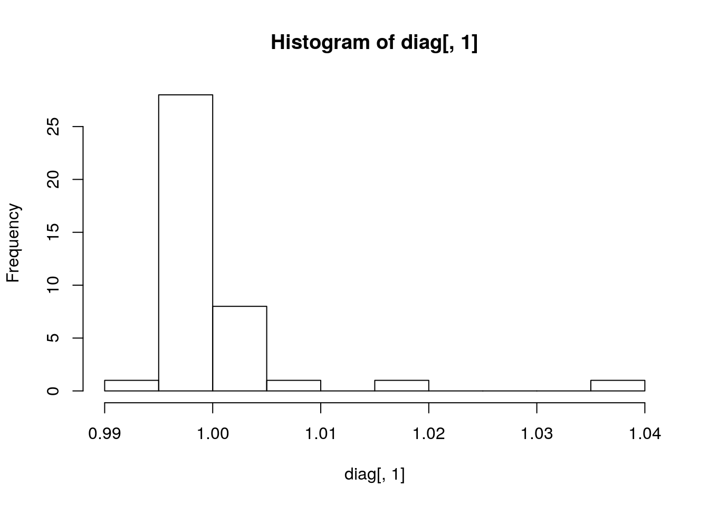
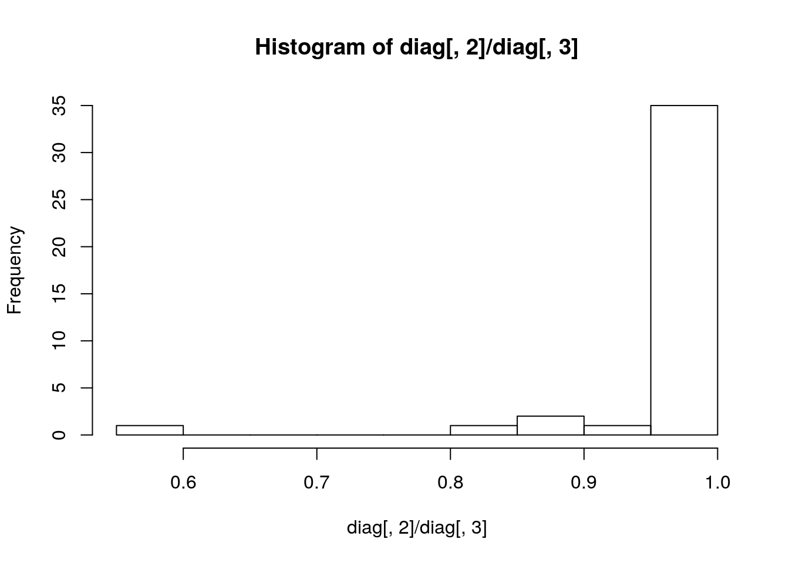
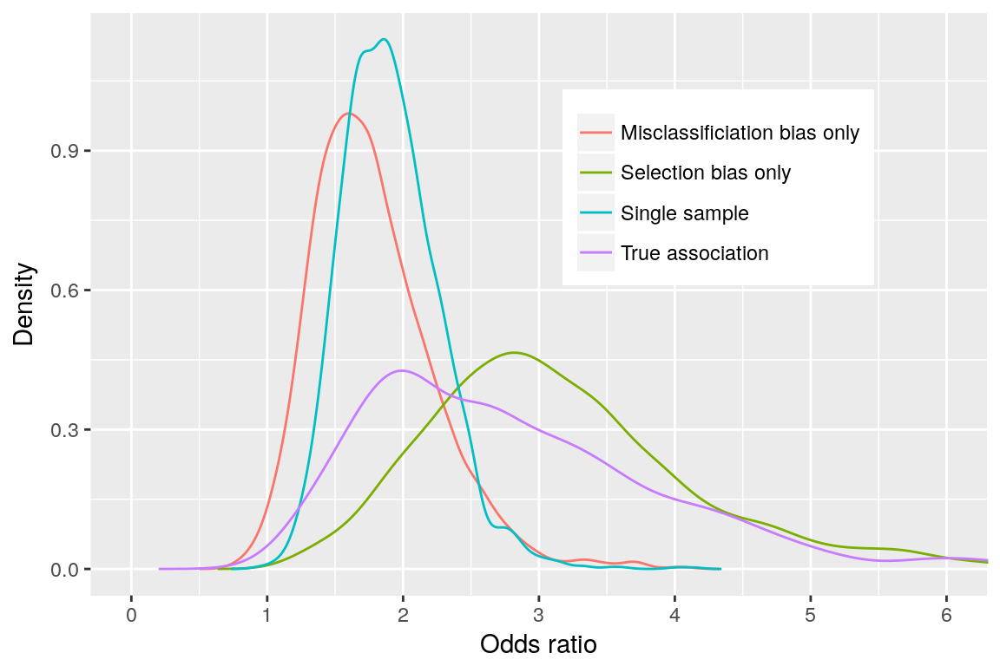

Using imperfect tests may lead to biased estimates of disease frequency and of associations between risk factors and disease. For instance in longitudinal udder health studies, both quarters at risk and incident intramammary infections (IMI) can be wrongly identified, resulting in selection and misclassification bias, respectively. Diagnostic accuracy can possibly be improved by using duplicate or triplicate samples for identifying quarters at risk and, subsequently, incident IMI.
This package allows the udder health researcher to estimate the potential biases that would be present in his/her study according to pathogen, population, and test characteristics. Improvement in sensitivity (Se) and/or specificity (Sp) of the tests can also be assessed with the package to help the design and planning of the study. The package was developed for the paper Diagnosing intramammary infection: Controlling misclassification bias in longitudinal udder health studies, by D. Haine, I. Dohoo, D. Scholl, and S. Dufour. Full description of the methodology is provided in the above paper. The approach in the paper used many simulations to explore various biases ( i.e. had to resort to cloud computing for these lengthy simulations), but the researcher interested in assessing his/her study design can use the package with less simulations to have an indication on the best planning for his/her study. This is what is presented hereafter.
The package is installed from Github:
It is loaded into your session with:
library(misclass)
#> Loading required package: RcppThe package uses prior Beta distributions for sensitivity and specificity of the diagnostic test(s), and logistic and Poisson 3-level (quarters within cows within herds) regression models for evaluating cluster-specific association (odds ratio) and incidence. The models are implemented using the Stan modelling language.
The function make_data allows the creation of datasets simulating an hypothetical cohort study. Since correlation structures are often found in udder health studies, the generated datasets are deemed to have occurred from the collection of two milk samples collected 1 month apart from each quarters of a random sample of cows per herd, from a given number of dairy herds. The first milk sample (S1) is used to identify quarters at risk of intramammary infection (IMI) at the beginning of the cohort, while the second (S2) is used to identify the outcome (acquisition of a new IMI). Three hypothetical exposures E_q, E_c, E_h (quarter, cow, and herd level) with known strength of association are generated. As it is often the case (Dufour et al. 2012), exposures are equally associated with odds of a prevalent IMI on first milk sample as with odds of IMI acquisition on second sample. Exposures are randomly associated with odds of eliminating an existing IMI (OR = 1.0). If S. aureus or CNS (coagulase-negative staphylococci) is chosen, default parameters are used. Otherwise user has to provide his/her own.
So let’s say our researcher wants to run a longitudinal study where he/she will recruit 20 herds, and within each herd 20 cows will be sampled.
sim_list <- vector("list", 10)
set.seed(123)
In the above code, first five empty lists are created that will hold the simulated datasets. Then a seed is set for reproducibility. Then the make_data function is used to create a dataset made of 20 herds, 20 cows per herd, with the default parameter values for CNS (see ?make_data for setting parameters). This is replicated 10 times to allow for 10 simulations later on.
Increasing Se and/or Sp is commonly achieved in udder health studies by carrying on duplicate or triplicate samplings with parallel or series interpretation. The gains or losses in Se/Sp are added/substracted to/from the original distributions for Se and Sp, and biased S1‘and S2’ variables are generated. Note that you can replace duplicate/triplicate samplings by whatever value you hope a different test would bring to your study.
The check_bias function fit a Bayesian logistic regression model to evaluate the true association, and the association in presence of selection and/or misclassification bias.
bias_or <- check_bias(sim_list,
iter = 250,
warmup = 50,
chains = 1,
cores = 1,
seed = 123,
nsimul = 10)The object created, bias_or is a list holding the results for the 10 simulations with, for each simulation, the values for the incidence (the first 5 elements of the list, as we ran 5 simulations), i.e. true association, single sample, selection bias only, and misclassification bias only, and diagnostic parameters in the next 5 elements of the list (Rhat, n_eff, etc.). You can use str(bias_or) to check the structure of this list.
We can put each together into separate matrices:
diag <- do.call(rbind, bias_or[11:20])
bias_check <- do.call(rbind, bias_or[1:10])You can run several diagnostics checks. More info on diagnostics can be found on the Stan wiki page.
## Distribution of Rhat
hist(diag[, 1])
## Ratio n_eff/sample_size
hist(diag[, 2] / diag[, 3])
Rh <- diag[, 1]
Rh[Rh > 1.1]
#> numeric(0)
summary(diag)
#> Rhat n_eff sample_size divergent
#> Min. :0.9950 Min. :110.1 Min. :200 Min. :0
#> 1st Qu.:0.9956 1st Qu.:200.0 1st Qu.:200 1st Qu.:0
#> Median :0.9965 Median :200.0 Median :200 Median :0
#> Mean :0.9991 Mean :195.1 Mean :200 Mean :0
#> 3rd Qu.:1.0002 3rd Qu.:200.0 3rd Qu.:200 3rd Qu.:0
#> Max. :1.0386 Max. :200.0 Max. :200 Max. :0
#> treedepth
#> Min. :6.000
#> 1st Qu.:7.000
#> Median :7.000
#> Mean :6.975
#> 3rd Qu.:7.000
#> Max. :7.000A summary of the different OR can be obtained:
summary(bias_check)
#> post_t post_s post_ss post_sm
#> Min. :-0.1545 Min. :-0.06405 Min. :0.1483 Min. :-0.2866
#> 1st Qu.: 0.6777 1st Qu.: 0.50420 1st Qu.:0.9036 1st Qu.: 0.3778
#> Median : 0.9611 Median : 0.62898 Median :1.1037 Median : 0.5438
#> Mean : 0.9707 Mean : 0.63057 Mean :1.1035 Mean : 0.5457
#> 3rd Qu.: 1.2407 3rd Qu.: 0.75136 3rd Qu.:1.2981 3rd Qu.: 0.7058
#> Max. : 2.5453 Max. : 1.42039 Max. :2.2034 Max. : 1.4059
exp(median(bias_check[, 1]))
#> [1] 2.614548
exp(median(bias_check[, 4]))
#> [1] 1.722491We see that the misclassification bias move the association towards the null value (OR of 1.72 versus true OR of 2.61).
We can generate a density plot to visualize the posterior distributions. But first let’s write a function to “densify” the data:
## Densify data to be used in a density plot
densify <- function(df, simul) {
ncolumns <- ncol(df)
dflist <- list()
CrI <- matrix(NA, nrow = ncolumns, ncol = 3)
colnames(CrI) <- c("q2.5", "q50", "q97.5")
for (i in 1:ncolumns) {
pre.dens <- exp(pre.dens)
CrI[i, ] <- quantile(df[, i], c(.025, .5, .975))
dens <- density(pre.dens$value)
dens <- data.frame(x = dens$x, y = dens$y)
dens$simul <- simul[i]
dflist[[i]] <- dens
}
densified <- do.call(rbind, dflist)
out_list <- list(densified, CrI)
out_list
}
bias_dens <- densify(bias_check,
simul = c("True association",
"Single sample",
"Selection bias only",
"Misclassificiation bias only"))
library(ggplot2)

The same can be done for evaluating the effect of duplicate or triplicate samplings (i.e., modifying the Se/Sp). We’re not running the code but it would be:
stgy_or <- sample_stgy(sim_list,
iter = 250,
warmup = 50,
chains = 1,
cores = 1,
seed = 123,
nsimul = 10)Instead of using check_bias and smply_stgy functions, you use check_incidence and sample_incidence, respectively.
Note that Poisson models are slower to converge.
Dufour, Simon, Ian Dohoo, Herman Barkema, Luc DesCôteaux, Trevor DeVries, Kristen Reyher, and Daniel Scholl. 2012. “Epidemiology of Coagulase-Negative Staphylococci Intramammary Infection in Dairy Cattle and the Effect of Bacteriological Culture Misclassification.” Journal of Dairy Sciences 95 (6): 3110–24.